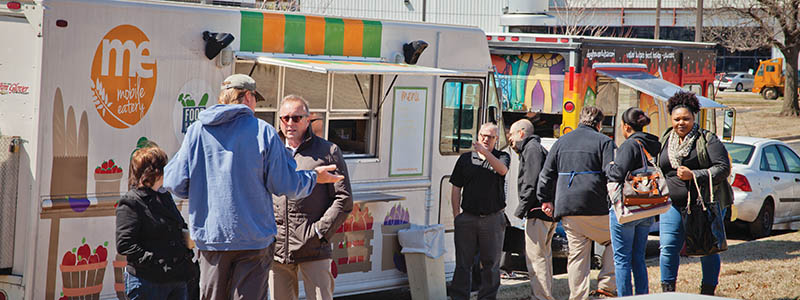
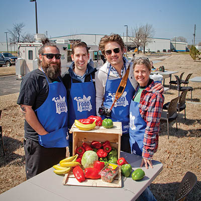

Stay 'til it changes
Taylor Hanson's Food on the Move brings long-haul perspective to food access

Nearly 20 years after they found international success as two teens, a tween and a really catchy ditty, the Hanson brothers’ wholesome, boy-next-door image and entrepreneurial spirit show no signs of wear. In 2007, the band founded Take The Walk, a barefoot walking campaign to support HIV/AIDS relief and fight poverty in Africa (TakeTheWalk.net). In the years since, they’ve built an empire from their home base—the unassuming 3CG Records in the heart of what’s now the Brady Arts District—and employed their strengths with increasingly positive results for Tulsa.
In 2013, Hanson launched their first craft brew, Mmmhops Pale Ale, through Hanson Brothers Beer Company. This year marked the second all-ages beer and music festival, The Hop Jam, to downtown Tulsa. The band just wrapped up a 10-city North American tour and is working on a project with strong ties to Oklahoma’s music heritage, to be released in the next 12-18 months. They’re also looking to open a local brewery and continue to expand their involvement with the local music scene.
Perhaps the most interesting project to come from the Hanson brothers’ commitment to Tulsa is Taylor Hanson’s Food On The Move, a program inspired by the community-focused work of Edward Perkins, a former U.S. ambassador to South Africa. The mobile food project brings food trucks, fresh produce, cooking demonstrations, music, and health and social services to food deserts—economically strapped areas with limited access to nutritious food options.
Food On The Move is visionary because it deals with the problem of food access in a way that both meets an immediate need and asks anyone who’s paying attention to re-think the way our community lives, works and eats.
I interviewed Taylor Hanson at 3CG a few days before he left for tour. Though discussing food insecurity was clearly his priority, he graciously answered all of my other questions—even about the renaming of Brady Street—and I walked away with a lot to think about.
Hanson told me that Tulsa’s geographic segregation is a primary challenge for Food On The Move. The program’s success depends on Tulsans’ willingness to step outside our insulated neighborhoods and invest in the marginal areas of our city. Broadening the boundaries of access to high-quality food and employment opportunities is good for all Tulsans, Hanson said, and a central goal of Food On The Move is to gain local consensus about that.
Mobile food events take place once a month at Tulsa Community College Northeast Campus and EduRec and will likely expand to other parts of town. The program’s “pay as you can” policy aims to build a culture where a person who eats for free now will return in the future able to pay a little extra. In the same vein, Food On The Move seeks to attract Tulsans from across the city—of all income levels—to connect with the events and build a stronger community as they help support the program.
The Tulsa Voice: Food On The Move is innovative because you’re bringing food to areas without it, instead of asking people to come to you.
Taylor Hanson: If you’re facing challenges of access to a paycheck, you’re also probably facing not having a car, not having transportation. You can’t build a soup kitchen on every street corner, and you shouldn’t. The food bank can only do so much.
But if we could take food or take energy to an area that is currently not thriving, then we could begin to strengthen a core group in each of these areas. We’re meeting you where you are today—so we’re meeting a core need, we’re meeting a hunger need. But what we’re really trying to do is to grow the list of people that are committed to seeing that neighborhood thrive again. And creating a climate that says, “We’re ready to see a grocery store; we’re ready for that business to come back”—or to be born out of that neighborhood.
TTV: What do you see as barriers for Food On The Move? How can Tulsa make the project go as far as possible?
TH: One of the greatest challenges we’re facing is the fact that there are people in Tulsa—farmers, people with knowledge—that could be bringing healthier and better food to us. One of the most critical things that we need to see happen in Tulsa is a change in conversation about food.
It just makes sense—when you see a family farmer, or a group of people that are growing amazing vegetables, and all the new things that are happening with aquaponics and hydroponics and small areas where you can grow incredible produce—that you would support your local farmer. Because all of the sudden, you’re eating better, our grocery stores are fueled, and our local economy is thriving.
That issue actually ends up benefiting all of us—poor, rich, living in a food desert or not. Looking at food deserts unlocks this bigger conversation about what all of us are eating, and how it’s getting to us, and why we’re eating it.
There’s this incredible opportunity: We actually are going to be led toward new solutions to make healthier produce accessible for everybody. There are incredible innovations in agriculture, and an opportunity to bring access to greater produce to us all is staring us in the face.
But we have to bring those lines together and say, “We actually want to find a way to support our local farmer. We actually want to see innovative and creative and positive things like an urban garden that is a good business”—not just an urban garden that’s successful, but an urban garden that actually provides employment.

TTV: 3CG Records was one of the first businesses to move into what’s now the Brady Arts District. Redevelopment has literally surrounded you on all sides, so you’ve watched a lot of change come through, as well as some growing pains. As a Brady district business owner, how have you processed the pseudo-renaming of Brady Street and the continued conversation about the Brady name?
TH: I don’t really want to get stuck on that. Here’s what I think. I think that forward is better than backward. There’s a million reasons to rethink the past. But I’m not sure that renaming an area is not more of a distraction than it should be a priority.
What I want to talk about is what the district is gonna be named that’s not there now (points toward north Tulsa). I want to name things after people that are leading today. Life is not made up of clean slates and perfect histories. What we should be talking about is, why are we still not seeing businesses grow in certain areas?
Renaming a district is not a bad idea. But I’d really rather name the next district after other individuals that we all believe are worthy of that new name. That, to me, is what we should be focused on.
TTV: Your studio is also at the physical center of live music in Tulsa, in an area full of local artists. Do you feel connected with the local music scene, or are you kind of your own situation?
TH: Yeah, I feel connected with a lot of local bands. When we’ve done The Hop Jam, we’ve put on opening band contests and had tons of great artists submit their music. We’ve gotten to know a lot of those musicians. Paul Benjaman is a friend and a great musician in town. All About a Bubble guys won the last contest, and they’re playing around.
The fact that we can go visit with Leon Russell or go see Roy Clark, and we have those friendships, is huge. There is the current scene of musicians locally that I think is really cool. But what I’m most interested in is the future, because Tulsa is in a position to decide to be a great place for music and arts. And right now, it is only a place to be a local artist—or like us, we’ve had success, and we’ve chosen to be here, so we’ve kind of made our own island; we’ve figured out how to work here and love being in Tulsa.
But it’s not an industry city. It’s not a city where you’re able to move from A to B to C as an artist, as a musician. And so I think the question is, can Tulsa be a place where we begin to invite innovators that are really starting labels, starting publishing companies, writing songs, promoting events—and grow those areas?
Seeing Tulsa thrive is not necessarily about keeping everyone in Tulsa. You’re always gonna go somewhere and come back. But each time you do that, it’s that question of, well, do you come back? And then when you come back, do you bring something back to this place, and does it continue to build and grow?

Josh Lynch, The Dog House food truck; Michael Grogan,
Food On The Move volunteer coordinator; Taylor Hanson,
FOTM founder; and Katie Plohocky, R & G Family Grocers
TTV: How do local food trucks factor into your work with Food On The Move?
TH: Food trucks are so key to what we’re trying to accomplish because they represent a sort of dignity. They’re cool and they’re fun, and they’re going to areas of town that are not seeing food trucks. It’s not a current stop for Andolini’s to be at 5424 N. Madison, almost to Turley. But they’re there, at Food On The Move. And those food trucks are an example of community leaders, businesses that are saying, “I’m going to give today. Not one day when I have enough money to start a foundation. I’m going to give with my business.”
Great example: Josh Lynch, who has the Dog House and Crunch (Nacho Ninjas) and recently started The Park in the Pearl. He made a commitment to request those trucks be a part of Food On The Move as a part of joining the park. And that’s a huge, huge statement as a small businessperson. The people that are paying the bills daily and starting their businesses, they are at the heart of seeing real change happen. And a huge amount of appreciation I have for the many food trucks that have taken time and dollars out of their pockets to say, “Today I am a mobile kitchen, and I’m providing these guests a level of dignity, a level of being treated just like every person that walks to the Guthrie Green to get their foodie lunch.”
TTV: That’s inspiring.
TH: Yeah, it’s ‘cause they’ve done it. I don’t have a food truck, so I couldn’t offer it.
We define what kind of place we live in. And I have the advantage as well of working since I was really young. So I have zero tolerance for people saying, “Oh, I can’t make a difference.” Because I was given the gift of seeing that it’s possible to succeed with what you love. That’s where I love getting the opportunity to come alongside people that have those abilities—a food truck owner, an entrepreneur—and they’re right on that cusp where they’re like, “I might cash it in. I might just throw in the towel. This is too hard.” But it’s just a matter of surviving just a little bit longer. Just a little bit longer until that idea or that business or that thing that we believe in works.
And most people that end up making a change, they didn’t necessarily have a better idea than the person next to them. But they stuck it out. They stayed on it. That is a huge, non-flashy, non-complex version of what we need to do. We just need to decide as a community that having two miles away from here be an area that has no grocery store—with thousands of people that would put dollars into the coffers of that business and support it and see it grow, and see business thrive, and see neighborhoods begin to improve—that we believe that that’s not okay. You decide you’re going to stay on it until it changes.
For more from Molly, read her article on Pershing Studios.


.jpg)
.jpg)